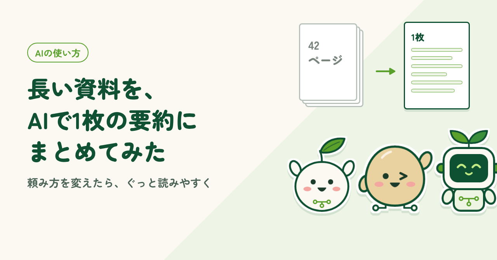
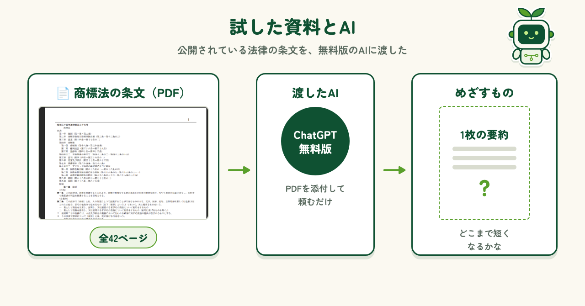
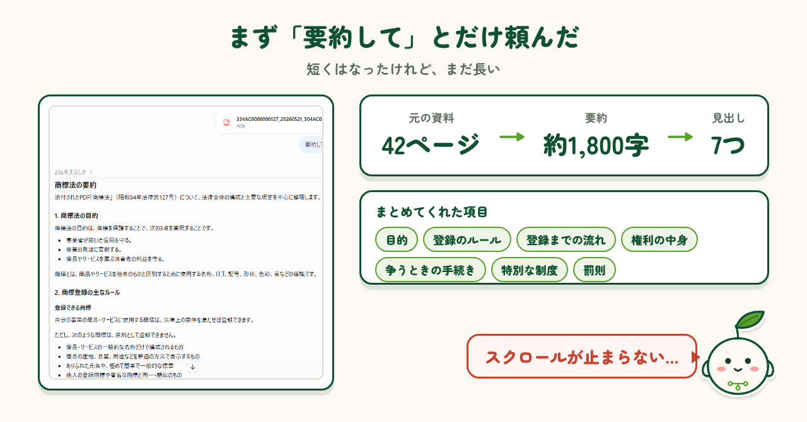
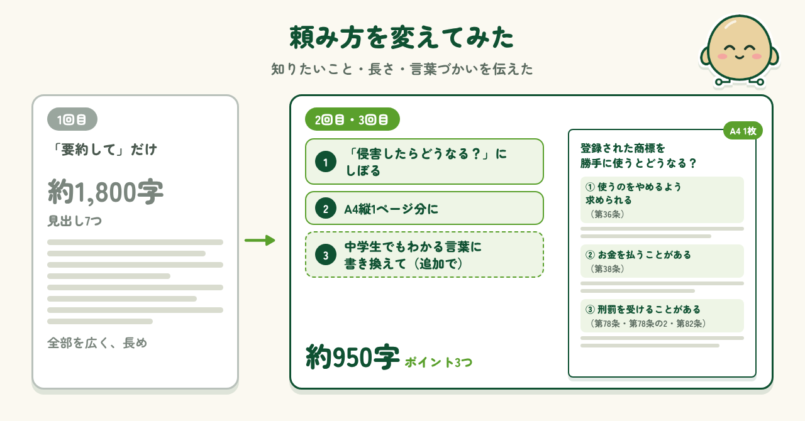
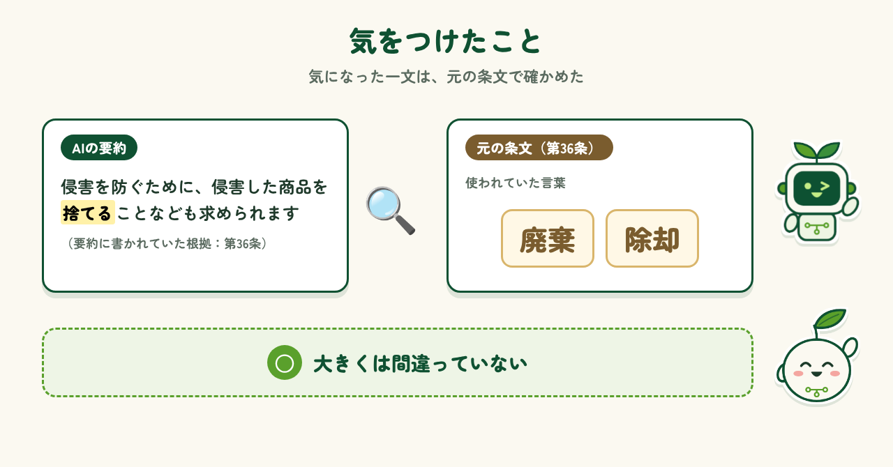

2026.11.13 公開
長い資料を、AIで1枚の要約にまとめてみた
商標法の条文42ページを、AIで1枚の要約にまとめられるか試しました。頼み方で変わった点と、確かめるときのコツを紹介します。

はじめに
仕事でも勉強でも、長い資料を全部読むのは大変です。依頼サイトでも「資料を要約してほしい」という仕事をよく見かけます。そこで今回は、長い資料をAIに渡して、1枚に収まるくらいの要約が作れるか試してみました。最初にそのまま頼んだときと、頼み方を変えたあとで、要約がどう変わったかを紹介します。
試した資料とAI
試した資料は、商標法の条文です。PDFで42ページあり、「若しくは」「又は」といった硬い言葉がずらりと並んでいます。法律の条文は誰でも読める公開資料なので、社外秘の心配がありません。これを、無料版のChatGPTにPDFのまま添付して渡しました。目標は、この42ページを1枚の要約にまとめることです。

まず「要約して」とだけ頼んでみた
まずは、PDFを添付して「要約して」とひと言だけ頼みました。ChatGPTは23秒ほど考えて、目的、登録のルール、登録までの流れ、権利の中身、争うときの手続き、特別な制度、罰則の7つの見出しに分けてまとめてくれました。42ページが約1,800字になったので、ずいぶん短くはなっています。ただ、読み終えるまでに何度もスクロールが必要で、まだまだ長いなというのが正直な感想です。1枚の要約には、ほど遠い長さでした。

頼み方を変えてみた
次は、頼み方を変えました。「すでに登録されている商標を侵害した場合、どうなるのか」に焦点をしぼり、「A4縦1ページ分の文量で」と長さも指定しました。ところが、出てきた文章はまだ堅め。そこで続けて「中学生でも理解しやすい言葉で書き換えてほしい」と頼みました。すると「登録された商標を勝手に使うとどうなる？」という見出しで、約950字にまとまりました。「やめるよう求められる」「お金を払う」「刑罰を受ける」の3つに整理されていて、だいぶわかりやすくなりました。

気をつけたこと
ただ、AIの要約をそのまま信じるのは禁物です。要約には「侵害を防ぐために、侵害した商品を捨てることなども求められます」という一文がありました。元の条文ではどう書いてあるのだろうと、第36条を見てみました。条文では「廃棄」「除却」という言葉が使われていて、大きくは間違っていないと感じました。要約に条文の番号が書かれていたので、確かめたいところをすぐに探せたのも助かりました。気になる部分は、元の資料と見比べることが大切です。

まとめ
「要約して」とだけ頼むと、AIは資料全体を広くまとめてくれますが、長さはなかなか短くなりません。知りたいことをしぼり、長さを決め、読む人に合わせた言葉づかいを頼むと、ぐっと読みやすい1枚になりました。ただし、要約はあくまで入り口です。気になるところは元の資料で確かめる。このひと手間を忘れずに、長い資料とのつき合いをAIに手伝ってもらおうと思います。
制作メモ
段落の構成と文章の下書きはAI（Claude）と作り、各段落に自分の感想を入れて、1段落ずつ確認・修正しました。図もAIと一緒に作っています。